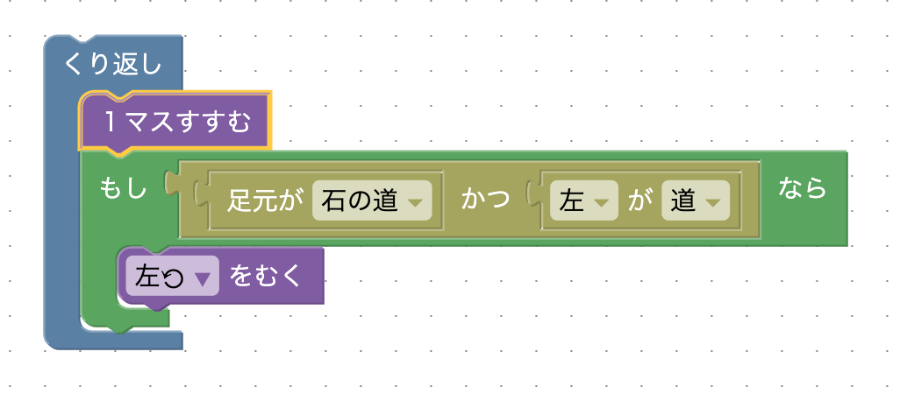
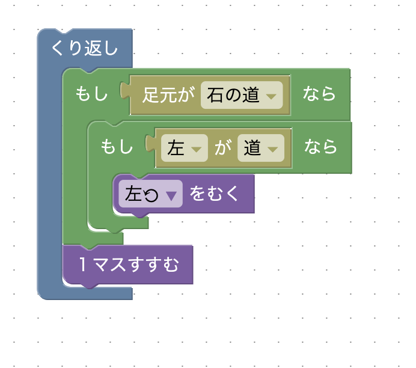

どのような場合に曲がればゴールに辿り着けるか考えてみましょう。
次のような条件で左に曲がることでゴールまで辿り着くことができます。このように「〇〇かつ〇〇」というような条件を「論理積」と言います。
次のように「もし〜なら」ブロックを2つ使うことで「かつ」を表現することもできます。条件判定で、星2の解法では毎回「左が道」と「かつ」の2つを読んでいましたが、この解法では「足元が石の道」でない時は「足元が石の道」の1つしか読まれません。そのため、条件を読む回数が減り、ステップ数が減ります。
